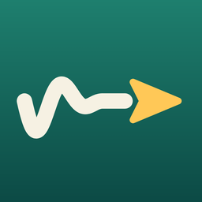

Jetcalm privacy policy
Effective 2026-11-22
This policy covers the Jetcalm app for iOS and Android ("Jetcalm", "the app"), made by Jackson Darrow ("we").
What we collect
Nothing. The app has no account or sign-in, shows no ads, and contains no analytics, crash-reporting or tracking software. We receive no information about you or about how you use the app.
What the app downloads
- Forecast files. The app downloads turbulence forecast files from a public website we publish on GitHub Pages (
juicypasta.github.io/jetcalm-data). The files cover the whole world and are identical for every user. The request does not contain your route, your airports, your trips, an identifier or any other user data: the forecast for your flight is worked out on your phone. - Airport weather. For takeoff and landing weather, the app asks MET Norway, the Norwegian Meteorological Institute (
api.met.no), for the forecast at the coordinates of the departure and arrival airports. Only the airport's coordinates are sent. Your own location is never sent, and the app never asks your phone for it.
As with any internet request, the servers that answer (GitHub for the forecast files, MET Norway for airport weather) see your device's IP address and the usual technical details of a web request. We have no access to those logs. See GitHub's privacy statement and MET Norway's privacy policy.
What stays on your device
Your searches, saved trips, cached forecasts, answers to "How was it?" after a flight, and settings are stored only on your device. They are never uploaded. Deleting the app deletes them. They may be included in your phone's own backup (iCloud or Google), which is governed by Apple's or Google's terms.
Motion sensor
The bump meter reads your phone's accelerometer while that screen is open. The readings are shown on screen and are not stored or sent anywhere.
Location
Jetcalm does not ask for or use your location.
Notifications
Trip alerts are scheduled on your device. No notification service of ours is involved and no push token is collected.
Purchases
Jetcalm Pro is bought through Apple's App Store or Google Play. Apple or Google processes the payment under its own privacy policy. We never see your name, email address or payment details; the app only learns from the store whether Pro is active on your device.
Sharing
If you use Share, the app makes an image of your forecast summary and hands it to the app you choose. Nothing is sent unless you share it.
Children
Jetcalm is a general-audience app and is not directed at children. It collects no personal information from anyone.
Your choices and rights
Because we hold no personal data about you, there is nothing for us to give access to, correct or delete. Everything the app knows is on your device, where you can delete trips one by one or remove the app.
Changes
If the app's handling of data changes, this page will be updated and the effective date above will change before the new version is released.
Contact
Questions about privacy: dangochains@googlegroups.com.